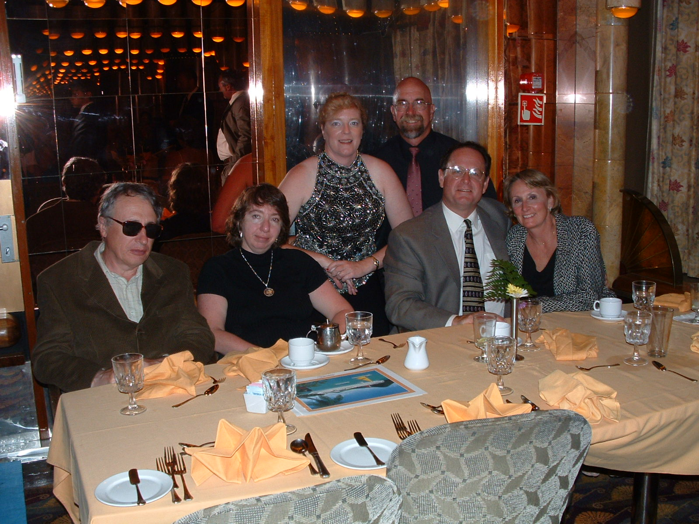

Tampa
May 28 [Wed]-June 8
cruise
from Tampa -7-Night Western Caribbean (Tampa Round-Trip) Cruise on
the Inspiration
that we can get at a discounted price if booked before February 28.
[Special Offers: Book this cruise between January 23, 2003 and February
28, 2003 and get $100
cash back. Applicable sailings between March 1, 2003 and December 31,
2003 are
shown below. Certain restrictions apply. Not for the Inspiration !]
[Use your MasterCard card to book this cruise between January 23, 2003
and
February 28, 2003 and get $75 cash back. ]
http://leisure.travelocity.com/Vacations/Cruise/Itinerary/0,2415,TRAVELOCITY_1932_3,00
[travelocity
|
[Sunday, June 1, 4 pm - Sunday June 8, 8:00 am; Carnival
Cruise Lines]
[
inside outside
06/01/03 - 06/08/03 $699
$849 ]
[http://www.mytravelco.com/travel.dll/travel/cruises/rate_option.do?BV_UseBVCookie=yes
$699 bunk beds;+88.25 taxes and fees ]
[$699 at http://www.vacationstogo.com/ticker.cfm?r=0&m=0&l=0&s=113&n=0&d=0&v=0&sp=y]
[Carnival $799]
Tampa2.html | Tampa.order.html
$850.90 /person Stateroom: R201, Category 4A Inside. upgrade: room
M201
terms
and conditions |
may be we can spent a few days in Tampa before the cruise,
then come back and fly
back to New York. There is a cheap hotel near Busch Gardens
in Tampa:
http://www.florida-wholesale-travel.com/floridahotels/tampa/daysinnwest/default.cfm
[2901 E. Busch Blvd,$55;
roomsaver-contact
hotel, 800-329-7666, ask for rate code LEG. ;
May 28-June 1. W (4 nights).
travelcoupon
|
copy in my directory
(gif): Sun-Th $29; F-Sat $49]
[Days Inn 1991 $40-54]
[Bush Gardens Maingate 813 9336471 AAA 1997 $49, sr discount;
3 blocks from Busch Gardens;
1/2 mile from Adventure Island; discounted attr.tickets; outdoor pool;
Showtime; 24 h restaurant]
[orbitz $41 * 4 days; $45/day for Fr, Sat.] [travelocity
$44.10]
[Days Inn by phone :
W, Th 43.60/day;
May 30-31 $44.10+tax/day, conf. # 51611242, till 4 pm]
$29x2+tax=$67.10. 49x2+tax-$9.80-tax=100.92
May 28 W.
car serv to JFK 10:30 $20.
Delta to Tampa 2pm--4:30 pm.
Bay Shuttle to hotel $28+2.
bus one day pass $3 x2
Ybor Columbia Restorant ~$59.13.
taxi to hotel $20.
May 29 Th
breakfast Dennys coupon $3.00.
Busch Gardens $132.57 two 3 day passes with 2 $5
coupons.
bear 6 pack $5. club soda $1. tortilas $1.
dinner Dennys coupon $10.
F May 30 IHOP $15.27+1
Days Inn $67.10
Sat May 31 $14.30+1
Hotel key change.
breakfast at Ihop ~$15+1.
walk to Adventure Island. Walk to hotel.
Dinner at Olive Garden ~$43.61
Sun June 1 Aquarium $27
Days Inn $100.92. tip $5.
T June 3 Kirk $250
June 8. Sunday.
Bay Shuttle to airport $18.
June 9 Inspiration $562.50 (ship: gratitity $68.25x2; 3 shore
tours for two $404, $22 gold chain.)
 bigger
Tampa.html 2/2
air fare with American Airlines: it seems that it is about $219
per person for a round
trip. It seems that the entire "package" may be kept about $1,000 per
person.
[USAir $467 for both ($233.50 each) May 28, 1p LGA->DCA->TPA,
TPA June 8, 12:10 pm ->PHL-> LGA.
Alternate flights for these dates as low as: US$ 392.00 for both]
[Travelocity,Delta: $321.52 for both.
Wed, May 28 12:30pm JFK nonstop. Sun, Jun 08
4:30pm TPA-> nonstop JFK.]
[Delta : A #2187875444 ; L #4017408933]
Tampa4.html
attractions
|
[AAA 2003: Busch Gardens AAA discount; 9 a- 6 p; $49.95.
Adventure Island water park AAA discount; 9:30 a- 6 p; $27.95.
both $54.95.
Florida Aquarium $15.
Mus Sci Techn incl. IMAX $13.95.
Zoo $9.50; over 49 $8.50. ]
Baloon Tours $150.
Boat Tours. Starlite Princess River boats
2 h: F-Sun noon $11.25.
W noon lunch
3 h
$13.80.
San 1 pm Dixi